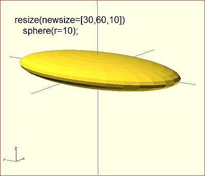

Modifies the size of the child object to match the given x,y, and z.
resize() is a CGAL operation, and like others such as render() operates with full geometry, so even in preview this takes time to process.
Usage Example:
// resize the sphere to extend 30 in x, 60 in y, and 10 in the z directions.
resize(newsize=[30,60,10]) sphere(r=10);

If x,y, or z is 0 then that dimension is left as-is.
// resize the 1x1x1 cube to 2x2x1
resize([2,2,0]) cube();
If the 'auto' parameter is set to true, it auto-scales any 0-dimensions to match. For example.
// resize the 1x2x0.5 cube to 7x14x3.5
resize([7,0,0], auto=true) cube([1,2,0.5]);
The 'auto' parameter can also be used if you only wish to auto-scale a single dimension, and leave the other as-is.
// resize to 10x8x1. Note that the z dimension is left alone.
resize([10,0,0], auto=[true,true,false]) cube([5,4,1]);
Created with the Personal Edition of HelpNDoc: What is a Help Authoring tool?